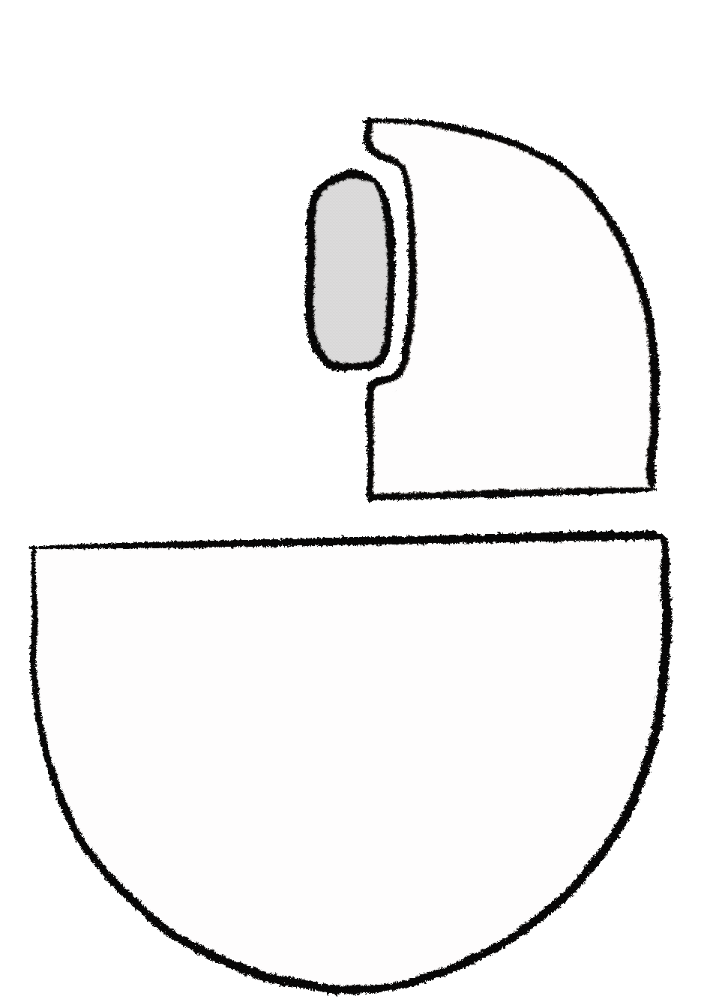
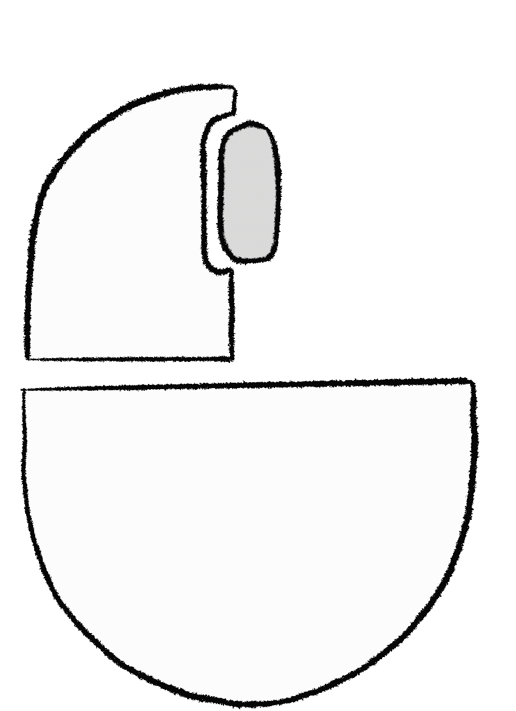

Modos de jogo:
Clássico : Tente fazer o seu melhor tempo!
TimeRush : Tente fazer o seu melhor tempo enquanto corre para o tempo não terminar!
MaxExplore : Tente fazer o seu melhor tempo, mas atenção há um número máximo de casas que pode explorar!
Fácil : Tabuleiro 9x9, em TimeRush tempo máx 3 min, em MaxExplore máx 50 casas
Médio : Tabuleiro 16x16, em TimeRush tempo máx 2 min, em MaxExplore máx 80 casas
Difícil : Tabuleiro 30x16, em TimeRush tempo máx 1 min, em MaxExplore máx 180 casas
Revelar conteúdo do quadrado:

Marcar quadrado com bandeira ou dúvida:

Facto!
Ao contrário do é pensado, a Microsoft não foi a criadora do jogo.
Este mini jogo de arcade existe desde da década de 60.
Nos anos 90, a Microsoft decidiu incorporar este jogo nos seus sistemas operativos,
comprando os seus direitos autoriais.
Vídeo tutorial - Jogo Minesweeper